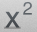

Equations and Expressions can be generated by using the same operators that are used to create graphs. GraphPouch offers a number of ways to create these types of objects.
-
Create Equation/Expression
To create an equation or expression, use one of the following steps:
- In GraphPouch, press Control-E (^E).
- Select Worksheet > New Expression.
- Press the New Expression button

- If you have a graph with equations that you would like to display on the current page select a graph. Open the Properties Panel if it is not already open. In the Equations section select one of the equations. Then click the button with the label 'eq'.